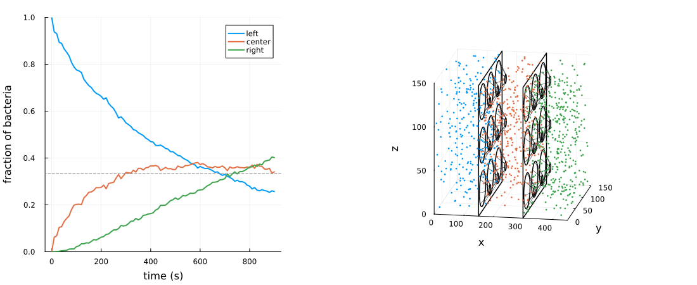

Rectification by three-dimensional walls of funnels
This is the three-dimensional counterpart of the two-dimensional funnel walls. Two plates divide the chamber in three regions of equal volume, and can only be crossed through arrays of conical funnels which narrow toward the right. Bacteria coming from the left are guided by the funnels toward the exits, while those coming from the right mostly hit the back of the plate and get trapped in the concave corners between the plate and the outer surface of the cones. Starting from the leftmost region, bacteria are thus pumped toward the right.
Each wall is a single obstacle, defined by its signed distance function (SDF) with ObstacleSDF; complex geometries can be built this way from a few simple ingredients. Each funnel is axisymmetric, so we can work in the half-plane (u, ρ), where u is the distance from the plate along x and ρ the distance from the funnel axis. In this plane, the solid is a thickened polyline: the plate is the half-line from (0, R) to (0, ∞), and the cone is the segment from (0, R) to (h, a). The distance from the polyline, minus the half-thickness r, is the signed distance from the surface of the funnel (with rounded edges). The funnels are then repeated on a square lattice by measuring ρ from the axis of the nearest lattice cell.
The plate distance only needs the nearest axis, the only one whose hole can contain the projection of a point onto the plate. Behind the plate, however, the cone of a neighboring cell can be closer than the one of the nearest cell, so we take the minimum over the 3×3 neighborhood: an ObstacleSDF may underestimate the distance from the surface, but never overestimate it.
using MicrobeAgents
using LinearAlgebra
using Random
using Plots
dt = 0.1 # s
Lx = 450.0 # μm
L = 150.0 # μm
space = ContinuousSpace((Lx, L, L); periodic=false)
# funnel walls
nf = 3 # number of funnels along y and z
p = L / nf # funnel period
xwalls = (Lx / 3, 2Lx / 3) # positions of the plates
R = 20.0 # radius of the funnel mouth
a = 5.0 # radius of the funnel exit
h = 25.0 # funnel length
r = 1.5 # half-thickness of plate and cones
# distance from point q to the segment AB
function segment_distance(q, A, B)
t = clamp(dot(q - A, B - A) / dot(B - A, B - A), 0, 1)
norm(q - A - t * (B - A))
end
function funnel_wall(x0, p, nf, R, a, h, r)
cone(u, ρ) = segment_distance(SVector(u, ρ), SVector(0.0, R), SVector(h, a))
plate(u, ρ) = ρ ≥ R ? abs(u) : hypot(u, R - ρ) # plate with a hole of radius R
cell(y) = clamp(floor(Int, y / p), 0, nf - 1) # lattice cell containing y
axis(i) = (i + 0.5) * p # position of the axis of cell i
return function (x)
u = x[1] - x0
i, j = cell(x[2]), cell(x[3])
ρ(k, l) = hypot(x[2] - axis(k), x[3] - axis(l))
d = plate(u, ρ(i, j))
for k in max(i - 1, 0):min(i + 1, nf - 1), l in max(j - 1, 0):min(j + 1, nf - 1)
d = min(d, cone(u, ρ(k, l)))
end
return d - r
end
end
# each wall is enclosed by a ball with center (x0 + h/2, L/2, L/2) and this radius
rb = norm(SVector(h/2 + r, L/2, L/2))
walls = [
ObstacleSDF(funnel_wall(x0, p, nf, R, a, h, r), SVector(x0 + h/2, L/2, L/2), rb)
for x0 in xwalls
]
obstacle_sets = (
Obstacles(space, walls; contact=Slide(; align=true)),
Walls(space; contact=Reflect()),
)
model = StandardABM(Microbe{3}, space, dt;
rng=Xoshiro(1),
container=Vector,
properties=Dict(:obstacles => obstacle_sets),
)
# bacteria initially uniformly distributed in the leftmost region
motility = RunTumble(run_speed=[20.0], run_duration=2.0, angle=Isotropic(3))
radius = 0.5
# the leftmost region ends at the left face of the first plate
lo = SVector(radius, radius, radius)
hi = SVector(xwalls[1] - r - radius, L - radius, L - radius)
for _ in 1:1000
pos = lo .+ rand(abmrng(model), SVector{3}) .* (hi .- lo)
add_agent!(pos, model; motility, radius, rotational_diffusivity=0.035)
end
nsteps = 9_000
when = 100
adf, _ = run!(model, nsteps; adata=[position], when)
X = Analysis.adf_to_matrix(adf, :position) # rows: times, columns: bacteria
# region of each bacterium: 1 (left), 2 (center) or 3 (right)
region(x) = 1 + count(≤(x[1]), xwalls)
# fraction of bacteria in each region
frac(k) = vec(sum(x -> region(x) == k, X; dims=2)) ./ size(X, 2)
left, center, right = frac(1), frac(2), frac(3)
# results
# fraction of bacteria in each region as a function of time
t = (0:when:nsteps) .* dt
p1 = plot(t, [left center right];
label=["left" "center" "right"],
xlabel="time (s)",
ylabel="fraction of bacteria",
ylims=(0, 1),
lw=2,
color=[1 2 3],
margin=5Plots.mm
)
hline!(p1, [1/3]; c=:gray, ls=:dash, label=false)
# final configuration, with the plates and the funnels drawn as wireframes
p2 = plot(xlims=(0, Lx), ylims=(0, L), zlims=(0, L), leg=false,
xlab="x", ylab="y", zlab="z", camera=(10, 15))
θ = range(0, 2π, 60)
for x0 in xwalls
plot!(p2, fill(x0, 5), [0, L, L, 0, 0], [0, 0, L, L, 0]; c=:black, lw=1.5)
end
for x0 in xwalls, i in 0:nf-1, j in 0:nf-1
yc, zc = (i + 0.5) * p, (j + 0.5) * p
for (x, ρ) in ((x0, R), (x0 + h, a)) # rims of mouth and exit
plot!(p2, fill(x, length(θ)), yc .+ ρ .* cos.(θ), zc .+ ρ .* sin.(θ); c=:black, lw=1.5)
end
for φ in range(0, 2π, 9)[1:end-1] # cone generators
plot!(p2, [x0, x0 + h], yc .+ [R, a] .* cos(φ), zc .+ [R, a] .* sin(φ); c=:black, lw=0.5)
end
end
xf = X[end, :]
scatter!(p2, first.(xf), getindex.(xf, 2), last.(xf);
ms=1.5, msw=0, c=region.(xf))
plot(p1, p2; size=(1100, 450), layout=grid(1, 2, widths=(0.4, 0.6)))